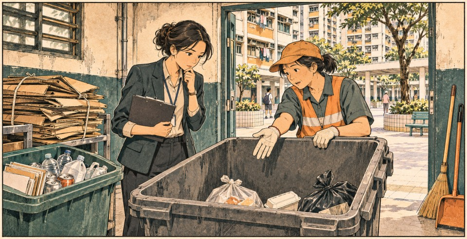

SUS-02 · Hong Kong · Waste charging · 10–15 minutes
Did our estate really cut waste by 30%?

You chair a Hong Kong estate committee. After a one-week trial charging households for each bag of mixed rubbish, the caretaker shows you the collection record. A resident proposes printing “We produced 30% less waste” in the newsletter. Will you sign it?
Estate collection record · kg per week| Collection | Before fee | Trial week |
|---|
| Mixed rubbish | 1,000 | 700 |
Your decisionApprove the sentence, rewrite it, or ask for another measurement. Which number supports your decision?
Round 2 · The recycling contractor calls
The recycling contractor sends a second weigh slip. In the week before the trial, the estate sent 100 kg for recycling. During the trial it sent 350 kg. Both slips cover the same households and the same number of days.
Your decisionHow many of the missing kilograms can the recycling increase account for? What can you now say about the rest?
Debrief · Follow the missing kilos
Mixed rubbish fell by 300 kg, from 1,000 to 700 kg. Recycling rose by 250 kg. Together, the two recorded streams fell from 1,100 to 1,050 kg. The remaining 50 kg is about 4.5% of the original recorded total. It could reflect prevention, storage until next week, or disposal elsewhere.
Charging per bag makes avoiding an extra bag valuable. Residents might buy less packaging, separate recyclables, or pack each bag more tightly. Weighing collections helps distinguish compaction from a fall in material. Before attributing a change to the fee, compare several weeks with a similar estate facing the same collection schedule and no new charge.
Instructor note · Running the discussion
0–3 minutes. Vote on the newsletter claim. Ask a student to name the 30% denominator. 3–7 minutes. Reveal the weigh slip and have pairs reconcile the 300 kg. 7–12 minutes. Ask for one defensible headline and one observation that could distinguish prevention from displacement.